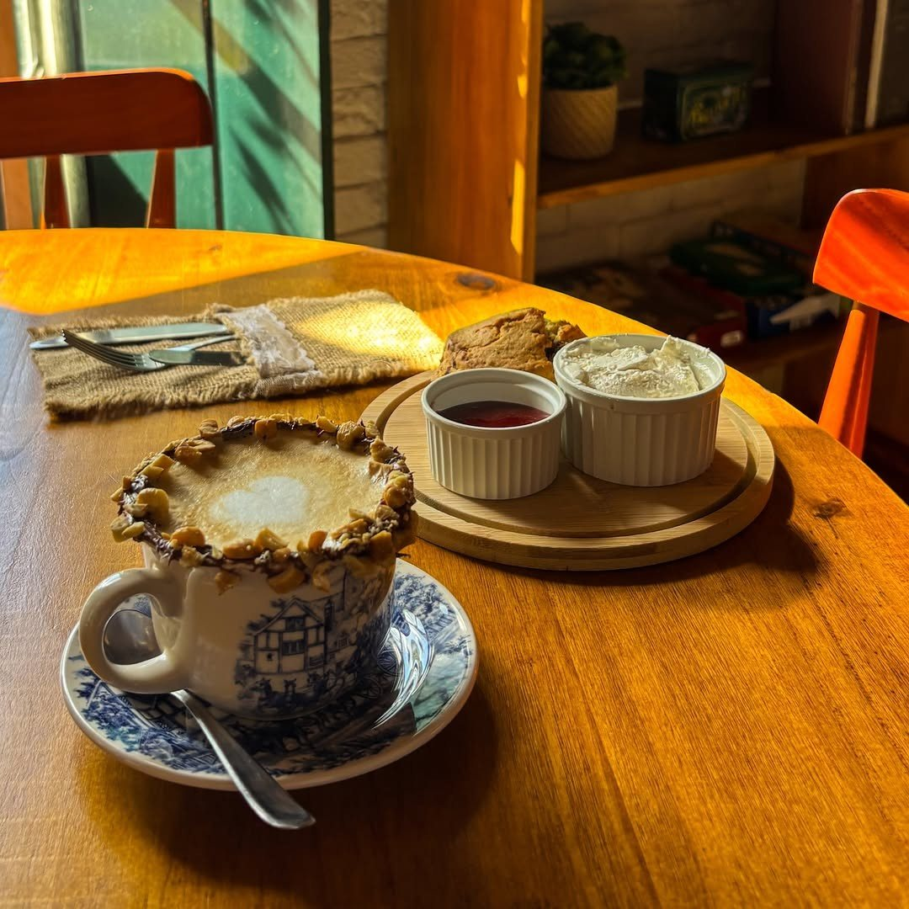
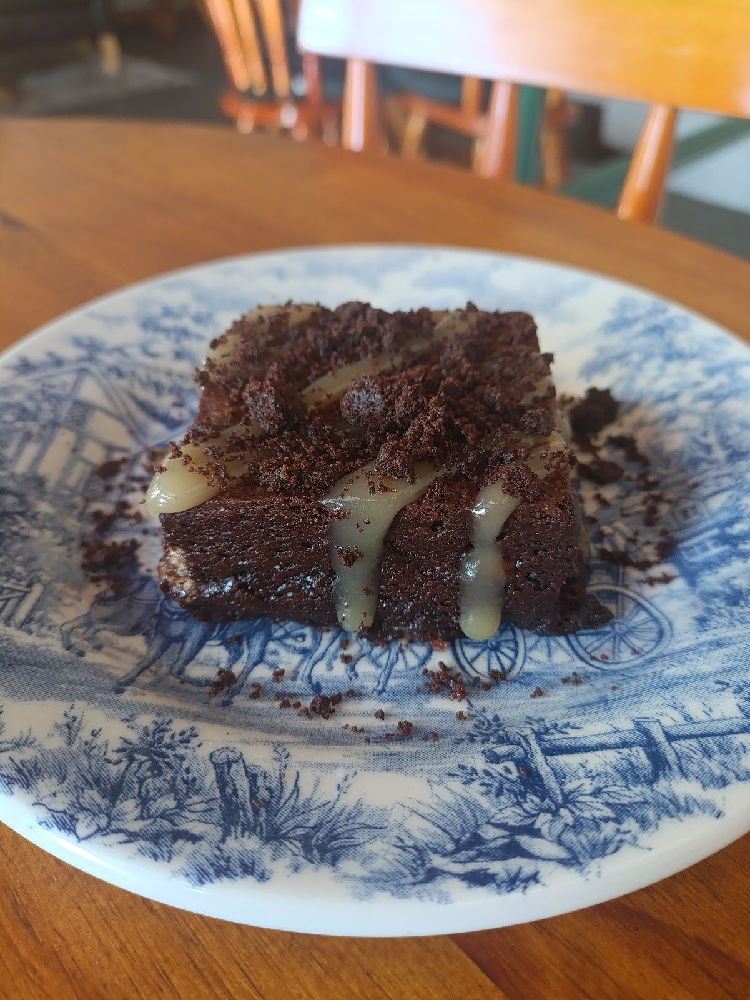
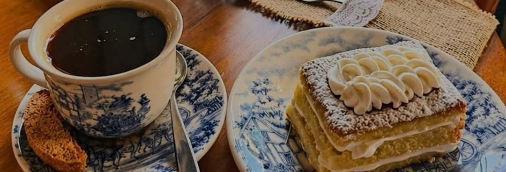

Our cakes
Scone com geleia e creme
Scone de frutas acompanhado de geleia e creme, o “tradicional” da legenda da casa. R$ 19.
Cafeteria inglesaPraça da Sé, 20 · Pelourinho
Scone com geleia e creme, chá Twinings no bule, café da manhã inglês e poltronas Chesterfield, a um passo da Praça da Cruz Caída. Uma mesa para sentar, sem pressa.
Ter–qui 9h–17h · sex–sáb 9h–18h · dom 10h–18h

Por onde começar · Where to start
Bolos, cafés, chás, sanduíches e café da manhã, em português e inglês, com busca.
Abrir o cardápioBreakfastOvos Benedict, Ovos Reais, shakshuka e o prato inglês completo.
Ver o café da manhãTea timeTwinings, Earl Grey Special, bule de 400 ml e scones com geleia e creme.
Ver os chásPedido de mesaMande o pedido pelo WhatsApp e a casa confirma a mesa.
Pedir mesa
A mesa sem pressa
“Uma mesa para sentar, um livro para folhear, um jogo para compartilhar, uma conversa que se estende, um café para acompanhar.”Little England Café, Instagram, 30/09/2026
Poltronas Chesterfield, tapete persa, relógio de parede e quadros negros com os especiais. Para a casa, “uma cafeteria pode ser muito mais do que aquilo que está na xícara”.
Conhecer o salão e a varandaDa cozinha e do balcão
Scone de frutas acompanhado de geleia e creme, o “tradicional” da legenda da casa. R$ 19.

Victoria Sponge, cenoura e nozes, cheesecake de limão com morango e brownie triplo chocolate. De R$ 19 a R$ 22.

Do espresso ao flat white, prensa francesa e Clever coado. De R$ 9 a R$ 19.
Duas linguiças, bacon, feijão cozido, dois ovos fritos, torradas e batatas fritas inglesas. R$ 58.
Coronation chicken com chutney de manga, em pão caseiro com salada cremosa de repolho. R$ 30.
“Um bolo de tâmaras incrivelmente macio, servido com uma deliciosa calda de toffee caramelo.” Especial de setembro: consulte.
Tea time
Chá Twinings, os chás ingleses especiais Strong English Breakfast e Earl Grey Special, ou um bule de 400 ml para dividir. Nos dias quentes, chá gelado de pêssego ou de limão com morango, “aqui na nossa varanda”.
Tea Menu
Chás especiais: “consultar disponibilidade”. Extra de leite + R$ 2. Preços em reais, do cardápio da casa.
Do quadro negro
“Todos servidos sobre pão tostado com molho estilo holandês”
Preços em reais · do cardápio da casa · ver o café da manhã
Experiências
Na edição de 27 de setembro, a casa transformou “a manhã de domingo em um momento para desacelerar, criar e aproveitar”. Não precisa ter experiência com pintura, e os combos incluem o material e “um café da manhã especial preparado por nós”.
Vem aí “uma pequena temporada de oficinas e experiências para os finais de semana”. As inscrições são pelo WhatsApp.
Como funcionam as experiênciasQuem já sentou à mesa
Sou frequentador assíduo do Little England Café há meses e sempre fui muito bem recebido. O trabalho deles sempre foi incrível, mas preciso dizer que o novo cardápio me surpreendeu de verdade! Os novos sabores são simplesmente de outro mundo.
Todos os doces que provei estavam maravilhosos, frescos, doces na medida exata! Pedimos o cookie de chocolate, o brownie com laranja e o scone, creme e geléia. Acompanhados de um bom café na prensa italiana ficou melhor ainda!
Uma delícia de lugar! Um cantinho super charmoso e aconchegante no Pelourinho. Café delicioso, comida muito gostosa e atendimento super acolhedor. Adorei conhecer!
Avaliações do Google, texto literal, consultadas em 03/10/2026.
Galeria
Pedido de mesa
Hoje tudo passa pelo WhatsApp, uma pergunta de cada vez. Aqui o cliente escolhe o dia, o horário, quantas pessoas vêm e a ocasião, e a mensagem chega organizada para a equipe responder e confirmar.
Visite · Find us
No Pelourinho, Centro Histórico de Salvador. Nas palavras de uma cliente no Google: fica no número 20, uma casa azul subindo as escadas
.
Horário publicado na bio do Instagram e na ficha do Google (03/10/2026).
Dúvidas frequentes
A casa não divulga sistema de reserva. Para saber se há lugar, mande o pedido de mesa pelo WhatsApp (71) 99735-3220: a equipe responde e confirma.
Terça a quinta, das 9h às 17h; sexta e sábado, das 9h às 18h; domingo, das 10h às 18h. Segunda, fechado.
Sim: “leite vegetal (aveia com castanha)”, por + R$ 3,50.
Sim. As artes do cardápio são bilíngues, e esta página mostra os nomes em inglês junto de cada item. English menu available.
Ele foi citado pelo Visit Salvador em janeiro de 2026, mas não aparece nas artes atuais do cardápio. Consulte a casa pelo WhatsApp.
Nos quadros negros do salão: “Consulte nossos quadros negros para saber os Especiais da casa e bolos”.
Sem pressa
A casa fica na Praça da Sé, 20, no Pelourinho. Mande o pedido de mesa e a equipe confirma pelo WhatsApp.
Junto com este site · OiComanda
O cardápio daqui de cima é só a vitrine. Na hora de pedir, o cliente vai para o cardápio digital da casa, e o pedido cai no painel de vocês, com aviso no celular e sem comissão. Toque no celular ao lado: é o cardápio de verdade, já com os seus pratos.
O cliente monta o pedido com fotos, sabores, bordas e adicionais; o preço soma sozinho.
Abrir →Cada pedido chega organizado, com endereço e pagamento; vocês avançam o status e imprimem a comanda.
Abrir →O cliente paga na hora e o dinheiro cai direto na conta da casa.
O cliente vê quando o pedido saiu, sem ligar para perguntar.
Primeira compra, frete grátis, dia da semana: vocês criam em segundos.
A cada tantos pedidos, um prêmio. O selo conta sozinho pelo WhatsApp do cliente.
O cardápio pergunta o aniversário e o cliente ganha um mimo no dia.
Todos os links da casa numa página com a cara de vocês, para pôr no Instagram.
Abrir →O cliente dá nota e comentário; as respostas chegam no painel.
O cliente pede pela mesa e o pedido chega como “Mesa 5”, sem garçom correndo.
Quem mais pede, quem sumiu e a mensagem pronta para chamar de volta.
Vendas, tíquete médio e os pratos que mais saem.


30 dias grátis, sem cartão e sem compromisso.